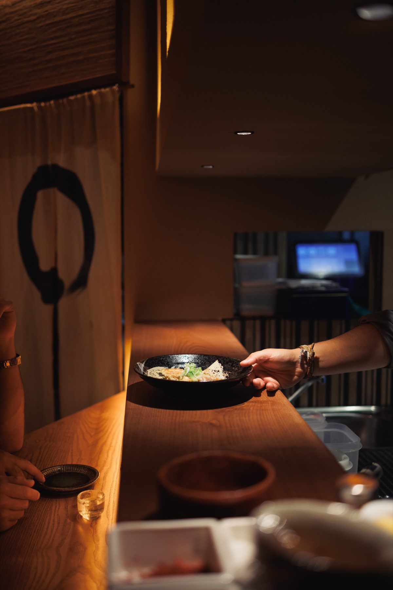
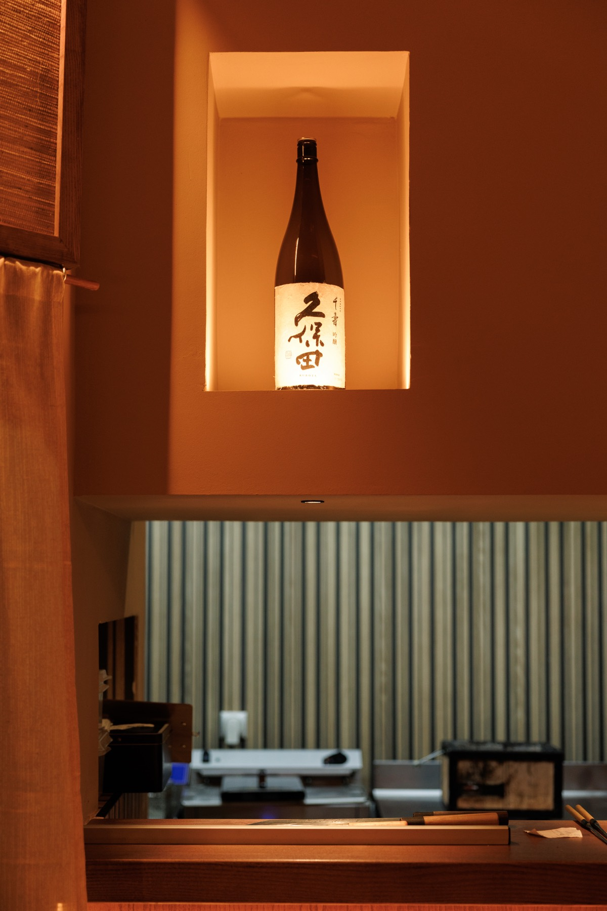
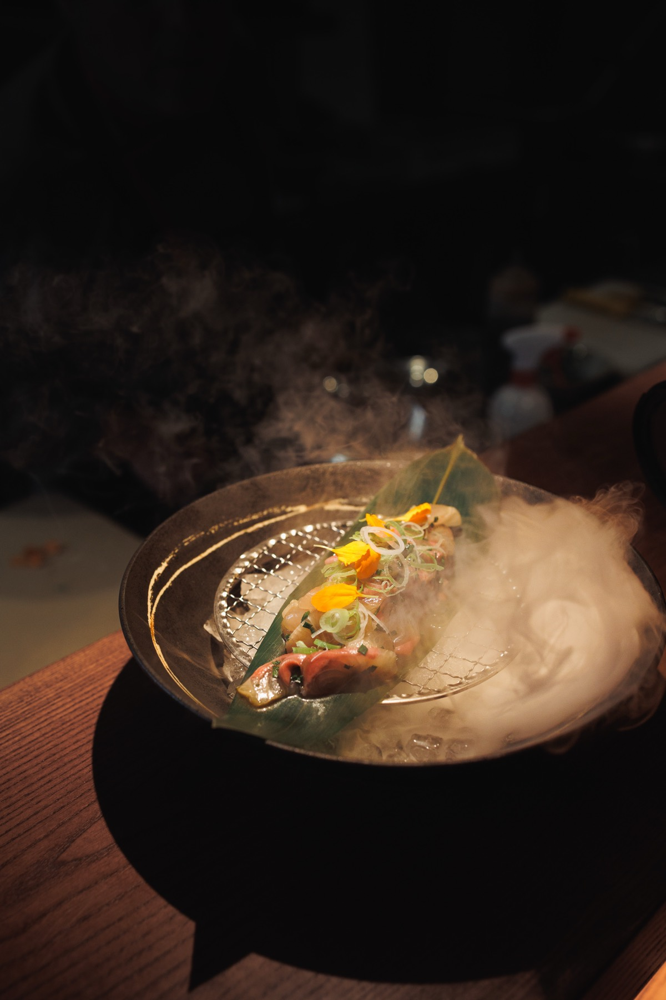
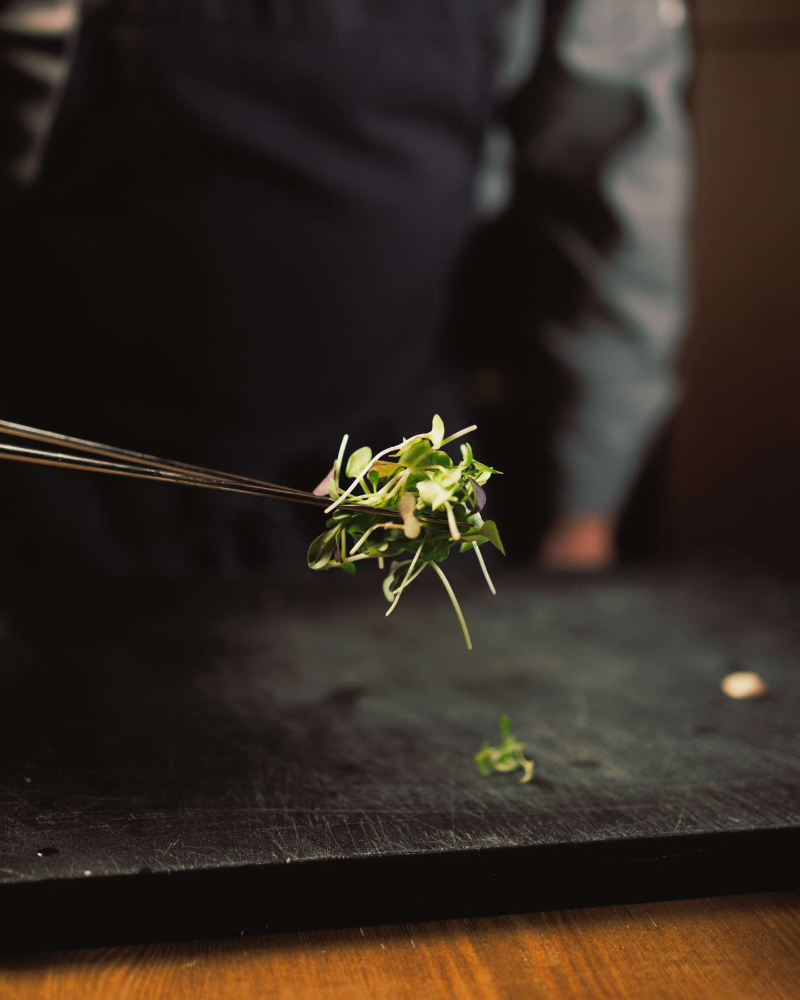
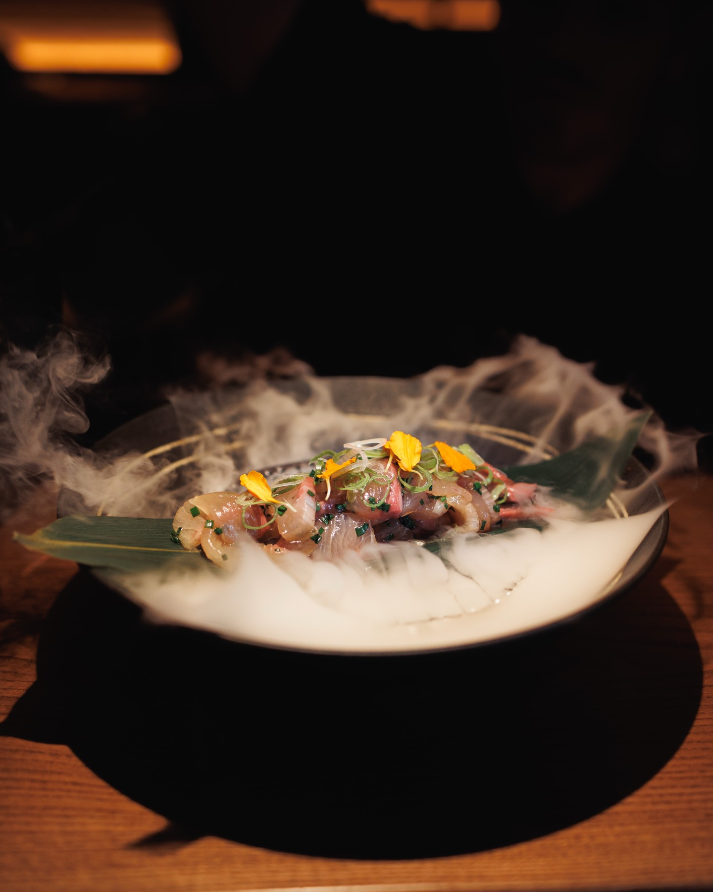
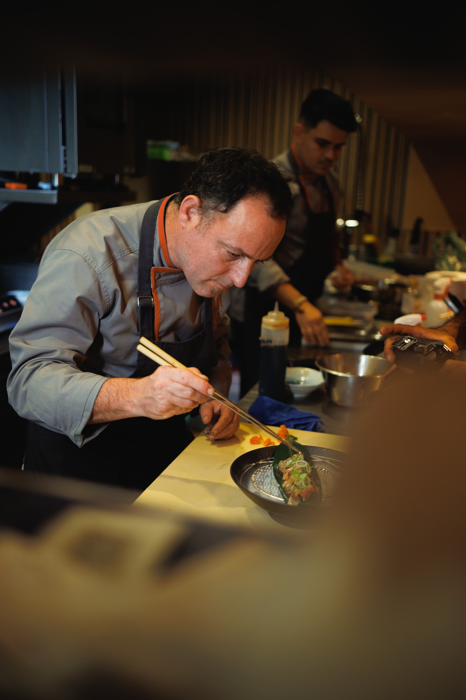
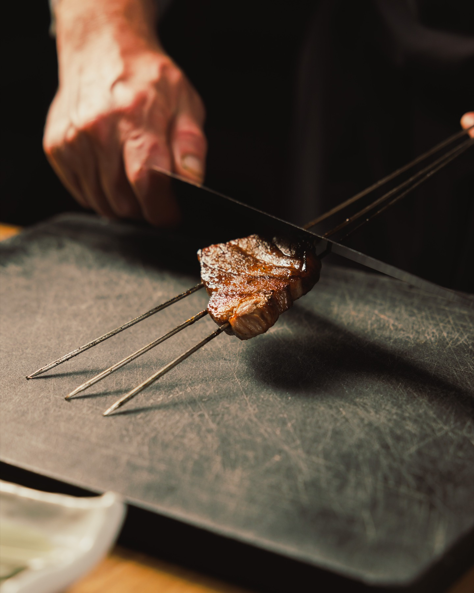

マラガの居酒屋
{{ t.hero.days }}{{ t.hero.hours }}
{{ t.hero.award }}
{{ t.hero.award }}{{ t.hero.days }} · {{ t.hero.hours }}
居酒屋izakaya{{ t.que.def }}
居酒屋izakaya
{{ t.que.def }}
{{ t.que.text }}
{{ t.que.coda }}

大将taishō
{{ t.juan.title }}
{{ t.juan.p1 }}
{{ t.juan.p2 }}
お通しotōshi
{{ t.otoshi.def }}
{{ t.otoshi.title }}
{{ t.otoshi.text }}

枡酒masuzake
{{ t.beber.def }}
{{ t.beber.title }}
{{ t.beber.intro }}
{{ t.beber.sakeHead }}日本酒
{{ s.name }}{{ s.price }}
取り分けtoriwake
{{ t.come.title }}
{{ t.come.intro }}
{{ t.deg.kicker }}
{{ t.deg.name }}
{{ t.deg.price }}
{{ t.deg.cond }}
{{ d.h }}{{ d.items }}
{{ t.carta.note }}{{ t.come.cta }} →
{{ t.dicen.title }}
Nº1
{{ t.dicen.ofN }}
4,8{{ t.dicen.ta }}
4,7{{ t.dicen.g }}
{{ q.text }}{{ q.note }}
{{ q.who }}{{ q.src }}
{{ t.grupos.title }}
{{ mm.jp }}{{ mm.name }} · {{ mm.price }} €
{{ t.regalar.title }}
{{ t.regalar.text }}
{{ gf.n }}{{ gf.p }}
{{ t.regalar.how }}
01実験
J.L
一見さんお断りichigen-san okotowari
{{ t.jlab.line1 }}{{ t.jlab.line2 }}{{ t.jlab.line3 }}{{ t.res.title }}
{{ t.res.hoursLbl }}{{ t.res.lunch }} 13:30 – 16:30{{ t.res.dinner }} 20:00 – 00:00{{ t.res.note }}
{{ t.res.zone }}
{{ t.carta.title }}定番
{{ t.carta.intro }}
{{ t.carta.note }}
{{ c.name }}
{{ c.tag }}{{ it.name }}{{ it.desc }}
{{ it.price }}{{ c.star.name }}{{ c.star.tag }}
{{ c.star.price }}
{{ t.deg.kicker }}
{{ t.deg.name }}
{{ t.deg.price }}
{{ t.deg.cond }}
{{ d.h }}{{ d.items }}
{{ t.carta.drinks }}お酒
{{ t.beber.intro }}
{{ b.name }}
{{ it.name }}{{ it.price }}
{{ t.res.title }}
{{ t.hero.cta1 }}

{{ t.grupos.title }}
{{ t.grupos.sub }}
{{ t.grupos.menuWord }} {{ mm.n }}{{ mm.jp }}
{{ mm.name }}
{{ mm.price }} €{{ t.grupos.pp }}
{{ cd.k }}{{ cd.v }}
{{ t.grupos.order }}
{{ t.res.phone }}{{ t.regalar.title }}
{{ gf.n }}{{ gf.p }}{{ gf.s }}
01実験
J.L
OMAKASE
一見さんお断りichigen-san okotowari
{{ t.jlab.line1 }}
{{ t.jlab.line2 }}
{{ t.jlab.line3 }}




J.L.ab · Sake Izakaya · {{ t.res.addr1 }}, Málaga
© Sake Izakaya · {{ t.foot }} · {{ t.res.addr1 }} · {{ t.res.phone }}